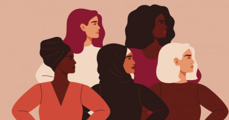

Fighting for 8th March
Follow the story of Clara Zetkin, the woman who fought her whole life for gender equality, but above all for this emblematic date.

Read
Feminism is present in our daily lives, we are all involved in it in one way or another. This movement, present in various forms, is measured on a global scale and has been present for centuries. It may seem like a sensitive subject to be avoided, but on the contrary, it should be talked about. People have put their heart and soul into their rights. Through politics, literature and the media, it is necessary to highlight this ideology that is too often denigrated.
Follow the story of Clara Zetkin, the woman who fought her whole life for gender equality, but above all for this emblematic date.
Discover "Suffragettes", inspired by real facts, relive the life of these women who lost everything to claim their rights. A historical drama, directed by Sarah Gavron, starring Carrey Mulligan and Helena Bonham Carter.
Living to exist, writing to denounce, this is how Gloria Steinem does it. Her genius helps and gives hope to feminists today.